I have used codes from the book Dalgaard (2008) for this lab.
Descriptive statistics
x <- rnorm(50)
mean(x)## [1] 0.1606675sd(x)## [1] 0.8320655var(x)## [1] 0.692333median(x)## [1] 0.1381403quantile(x)## 0% 25% 50% 75% 100%
## -1.6036973 -0.2468456 0.1381403 0.5552780 3.0859839pvec <- seq(0,1,0.1)
pvec## [1] 0.0 0.1 0.2 0.3 0.4 0.5 0.6 0.7 0.8 0.9 1.0quantile(x,pvec)## 0% 10% 20% 30% 40%
## -1.60369728 -0.85477527 -0.33681885 -0.19874614 -0.01908621
## 50% 60% 70% 80% 90%
## 0.13814026 0.27892721 0.36827415 0.59343974 1.08481671
## 100%
## 3.08598394data()
head(Nile)## [1] 1120 1160 963 1210 1160 1160summary(Nile)## Min. 1st Qu. Median Mean 3rd Qu. Max.
## 456.0 798.5 893.5 919.4 1032.5 1370.0library('ISwR')
attach(juul)
names(juul)## [1] "age" "menarche" "sex" "igf1" "tanner"
## [6] "testvol"mean(igf1)## [1] NAmean(igf1,na.rm=T)## [1] 340.168summary(igf1)## Min. 1st Qu. Median Mean 3rd Qu. Max. NA's
## 25.0 202.2 313.5 340.2 462.8 915.0 321summary(juul)## age menarche sex igf1
## Min. : 0.170 No :369 M :621 Min. : 25.0
## 1st Qu.: 9.053 Yes :335 F :713 1st Qu.:202.2
## Median :12.560 NA's:635 NA's: 5 Median :313.5
## Mean :15.095 Mean :340.2
## 3rd Qu.:16.855 3rd Qu.:462.8
## Max. :83.000 Max. :915.0
## NA's :5 NA's :321
## tanner testvol
## I :515 Min. : 1.000
## II :103 1st Qu.: 1.000
## III : 72 Median : 3.000
## IV : 81 Mean : 7.896
## V :328 3rd Qu.:15.000
## NA's:240 Max. :30.000
## NA's :859detach(juul)juul$sex <- factor(juul$sex,labels=c("M","F"))
juul$menarche <- factor(juul$menarche,labels=c("No","Yes"))
juul$tanner <- factor(juul$tanner,labels=c("I","II","III","IV","V"))
attach(juul)
summary(juul)## age menarche sex igf1
## Min. : 0.170 No :369 M :621 Min. : 25.0
## 1st Qu.: 9.053 Yes :335 F :713 1st Qu.:202.2
## Median :12.560 NA's:635 NA's: 5 Median :313.5
## Mean :15.095 Mean :340.2
## 3rd Qu.:16.855 3rd Qu.:462.8
## Max. :83.000 Max. :915.0
## NA's :5 NA's :321
## tanner testvol
## I :515 Min. : 1.000
## II :103 1st Qu.: 1.000
## III : 72 Median : 3.000
## IV : 81 Mean : 7.896
## V :328 3rd Qu.:15.000
## NA's:240 Max. :30.000
## NA's :859juul <- transform(juul,sex=factor(sex,labels=c("M","F")),
menarche=factor(menarche,labels=c("No","Yes")),
tanner=factor(tanner,labels=c("I","II","III","IV","V")))Graphics for single data
mid.age <- c(2.5,7.5,13,16.5,17.5,19,22.5,44.5,70.5)
acc.count <- c(28,46,58,20,31,64,149,316,103)
age.acc <- rep(mid.age,acc.count)
brk <- c(0,5,10,16,17,18,20,25,60,80)
hist(age.acc,breaks=brk)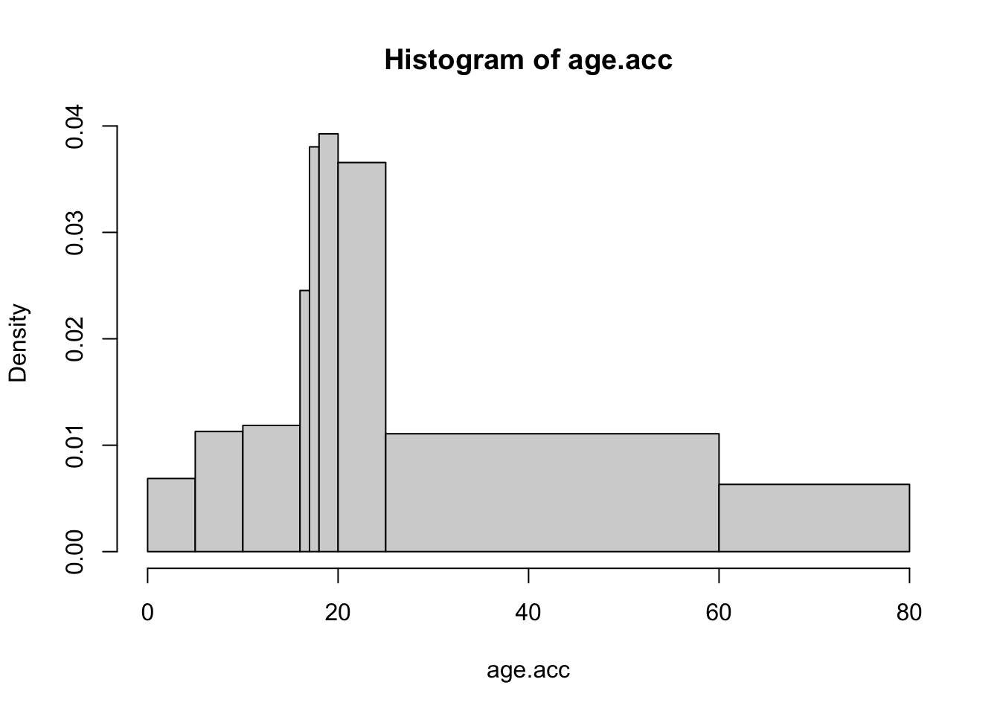
Q-Q plot
x <- rnorm(10000)
qqnorm(x)
qqline(x, col = 2,lwd=2)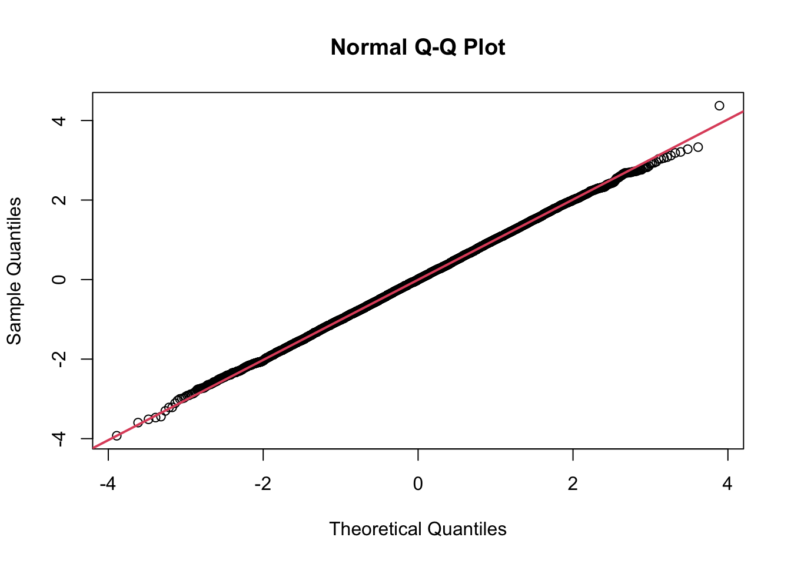
library(ggplot2)
data <- data.frame(x)
ggplot(data, aes(sample = x)) +
stat_qq() +
stat_qq_line(col = "red")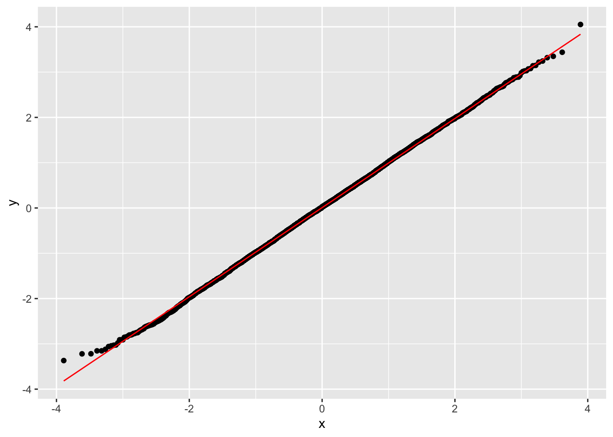
sample_data <- ToothGrowth
qqnorm(sample_data$len)
qqline(sample_data$len, col = 2, lwd = 2)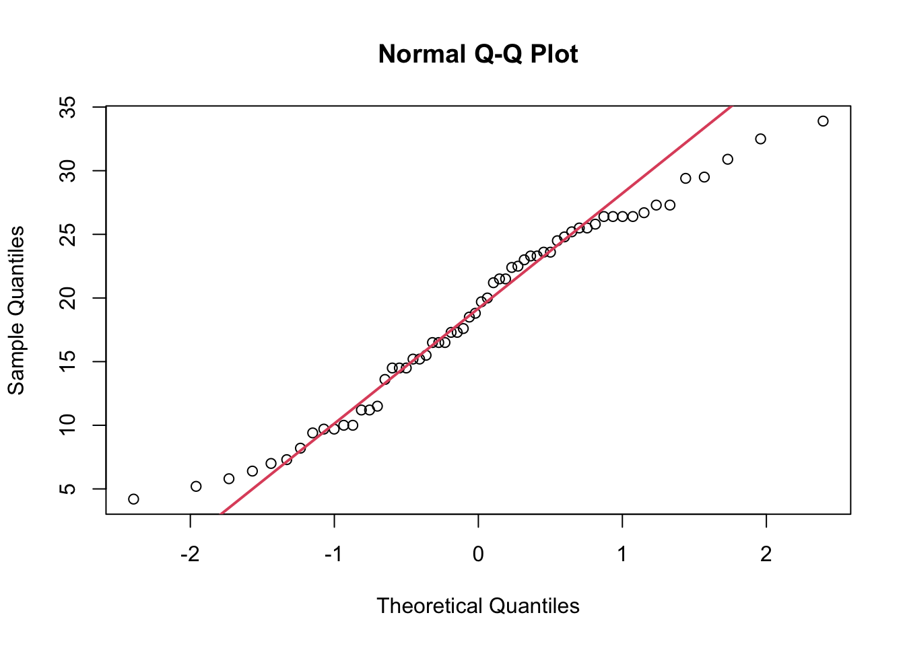
Box plot
par(mfrow=c(1,2))
boxplot(IgM)
boxplot(log(IgM))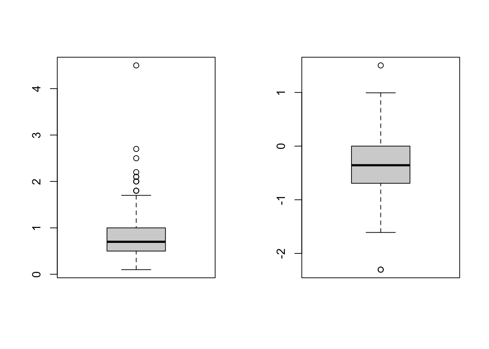
par(mfrow=c(1,1))Summary statistics by group
xbar <- tapply(igf1, tanner, mean, na.rm=T)
s <- tapply(igf1, tanner, sd, na.rm=T)
n <- tapply(igf1, tanner, length)
cbind(mean=xbar, std.dev=s, n=n)## mean std.dev n
## I 207.4727 90.27237 515
## II 352.6714 122.59332 103
## III 483.2222 152.28664 72
## IV 513.0172 119.09594 81
## V 465.3344 134.41867 328aggregate(juul[c("age","igf1")], juul["sex"], mean, na.rm=T)## sex age igf1
## 1 M 15.38436 310.8866
## 2 F 14.84363 368.1006by(juul, juul["sex"], summary)## sex: M
## age menarche sex igf1 tanner
## Min. : 0.17 No : 0 M:621 Min. : 29.0 I :291
## 1st Qu.: 8.85 Yes : 0 F: 0 1st Qu.:176.0 II : 55
## Median :12.38 NA's:621 Median :280.0 III : 34
## Mean :15.38 Mean :310.9 IV : 41
## 3rd Qu.:16.77 3rd Qu.:430.2 V :124
## Max. :83.00 Max. :915.0 NA's: 76
## NA's :145
## testvol
## Min. : 1.000
## 1st Qu.: 1.000
## Median : 3.000
## Mean : 7.896
## 3rd Qu.:15.000
## Max. :30.000
## NA's :141
## ------------------------------------------------
## sex: F
## age menarche sex igf1 tanner
## Min. : 0.25 No :369 M: 0 Min. : 25.0 I :224
## 1st Qu.: 9.30 Yes :335 F:713 1st Qu.:233.0 II : 48
## Median :12.80 NA's: 9 Median :352.0 III : 38
## Mean :14.84 Mean :368.1 IV : 40
## 3rd Qu.:16.93 3rd Qu.:483.0 V :204
## Max. :75.12 Max. :914.0 NA's:159
## NA's :176
## testvol
## Min. : NA
## 1st Qu.: NA
## Median : NA
## Mean :NaN
## 3rd Qu.: NA
## Max. : NA
## NA's :713Graphics for grouped data
attach(energy)
expend.lean <- expend[stature=="lean"]
expend.obese <- expend[stature=="obese"]
par(mfrow=c(2,1))
hist(expend.lean,breaks=10,xlim=c(5,13),ylim=c(0,4),col="white")
hist(expend.obese,breaks=10,xlim=c(5,13),ylim=c(0,4),col="grey")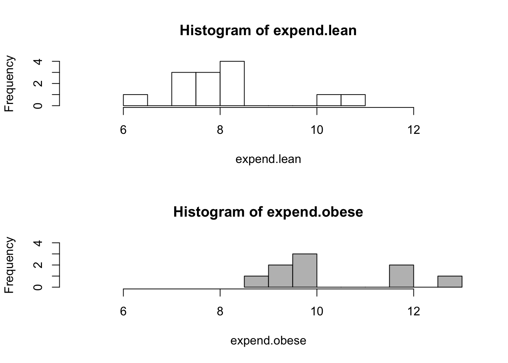
par(mfrow=c(1,1))
boxplot(expend ~ stature)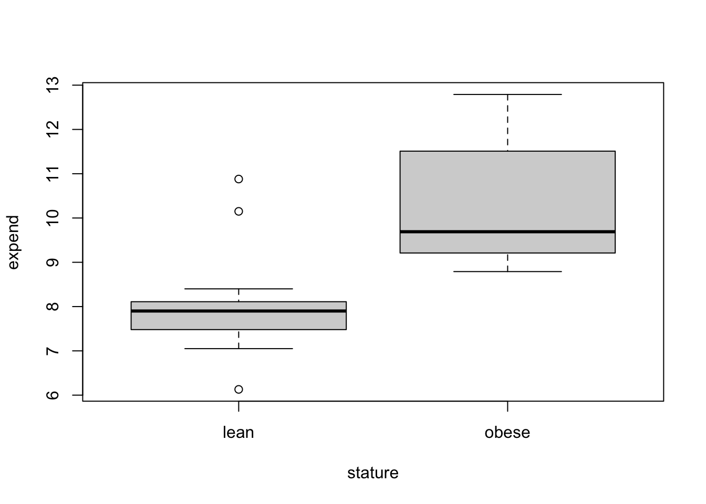
Tables
caff.marital <- matrix(c(652,1537,598,242,36,46,38,21,218,327,106,67),
nrow=3,byrow=T)
colnames(caff.marital) <- c("0","1-150","151-300",">300")
rownames(caff.marital) <- c("Married","Prev.married","Single")
caff.marital## 0 1-150 151-300 >300
## Married 652 1537 598 242
## Prev.married 36 46 38 21
## Single 218 327 106 67names(dimnames(caff.marital)) <- c("marital","consumption")
caff.marital## consumption
## marital 0 1-150 151-300 >300
## Married 652 1537 598 242
## Prev.married 36 46 38 21
## Single 218 327 106 67as.data.frame(as.table(caff.marital))## marital consumption Freq
## 1 Married 0 652
## 2 Prev.married 0 36
## 3 Single 0 218
## 4 Married 1-150 1537
## 5 Prev.married 1-150 46
## 6 Single 1-150 327
## 7 Married 151-300 598
## 8 Prev.married 151-300 38
## 9 Single 151-300 106
## 10 Married >300 242
## 11 Prev.married >300 21
## 12 Single >300 67table(menarche,tanner)## tanner
## menarche I II III IV V
## No 221 43 32 14 2
## Yes 1 1 5 26 202xtabs(~ tanner + sex, data=juul)## sex
## tanner M F
## I 291 224
## II 55 48
## III 34 38
## IV 41 40
## V 124 204total.caff <- margin.table(caff.marital,2)
total.caff## consumption
## 0 1-150 151-300 >300
## 906 1910 742 330barplot(total.caff, col="white")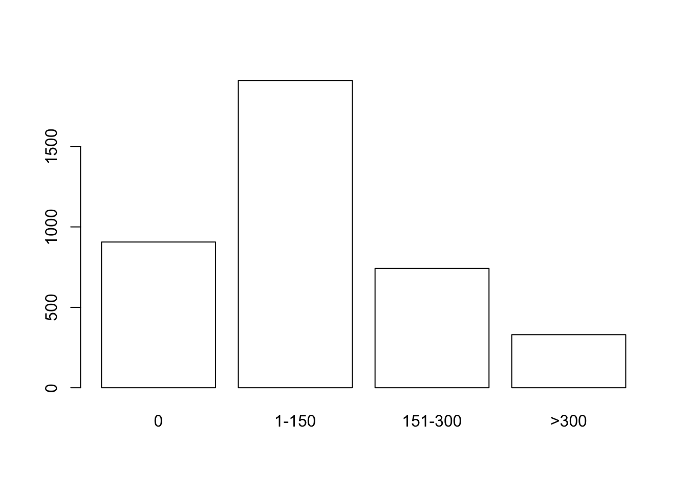
par(mfrow=c(2,2))
barplot(caff.marital, col="white")
barplot(t(caff.marital), col="white")
barplot(t(caff.marital), col="white", beside=T)
barplot(prop.table(t(caff.marital),2), col="white", beside=T)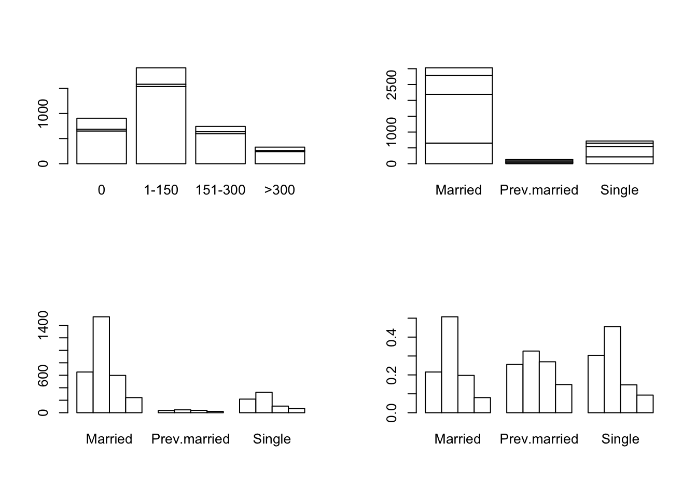
par(mfrow=c(1,1))
barplot(prop.table(t(caff.marital),2),beside=T,
legend.text=colnames(caff.marital),
col=c("white","grey80","grey50","black"))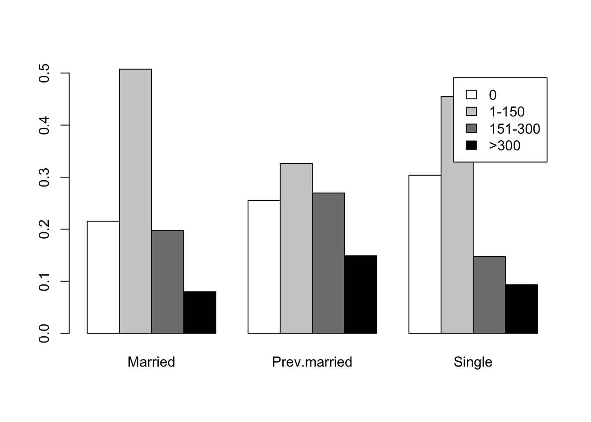
Piecharts
opar <- par(mfrow=c(2,2),mex=0.8, mar=c(1,1,2,1))
slices <- c("white","grey80","grey50","black")
pie(caff.marital["Married",], main="Married", col=slices)
pie(caff.marital["Prev.married",],
main="Previously married", col=slices)
pie(caff.marital["Single",], main="Single", col=slices)
par(opar)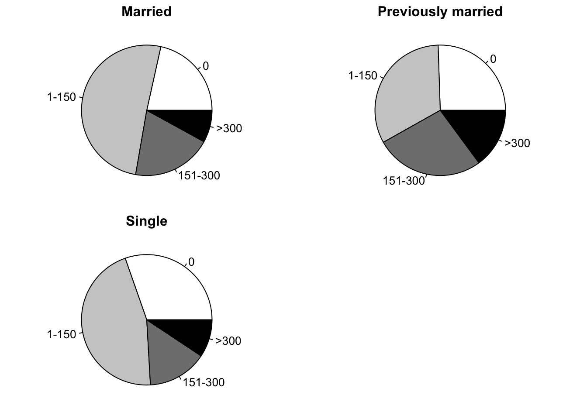